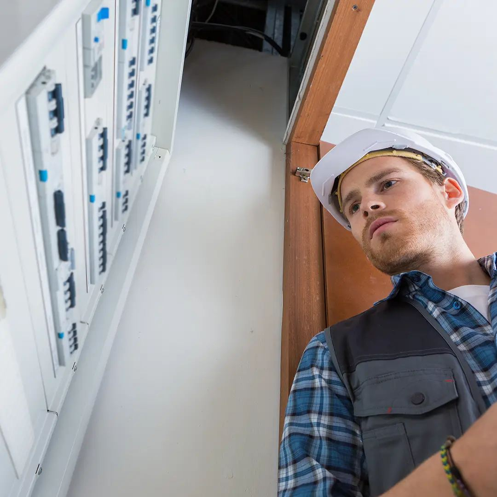
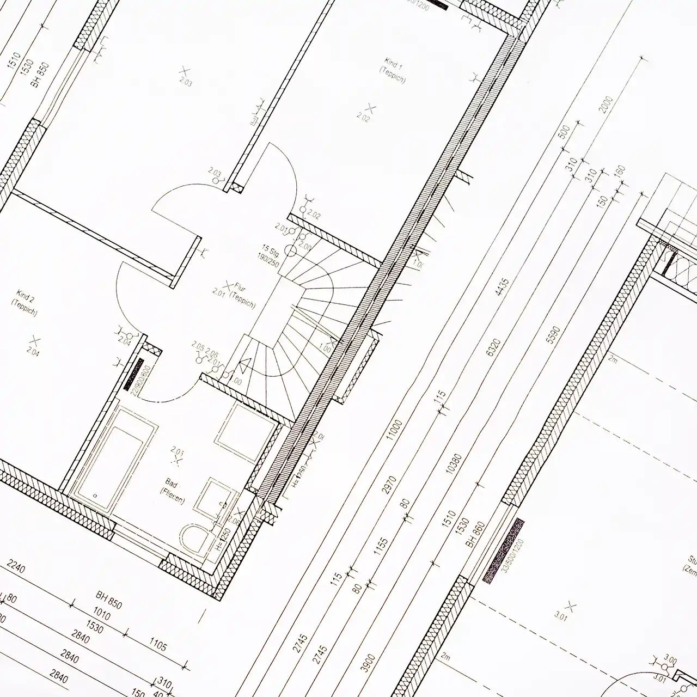
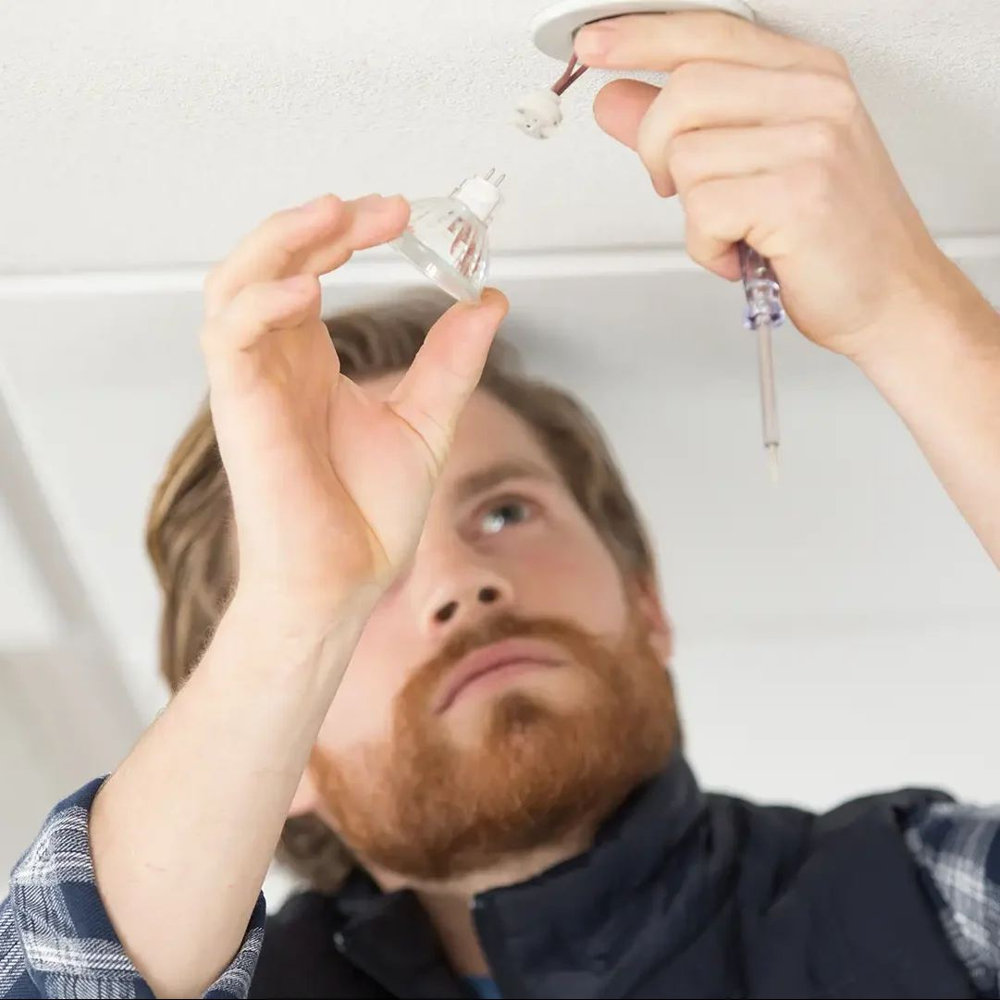
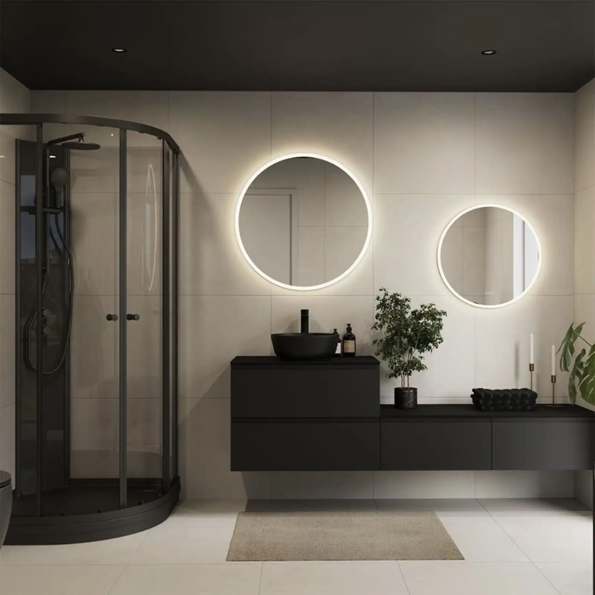

Hjem/El-installasjon
El-installasjon
Nyinstallasjon, rehabilitering, sikringsskap og feilsøking. Vi leverer alt fra en enkelt kurs til komplette anlegg – med dokumentasjon ved overlevering.

01 / Nyinstallasjon
Nye anlegg og ombygging
Når lokalene endrer bruk, må elektro følge etter. Vi planlegger anlegget så det tåler neste endring også.
Vi tar hånd om hele veien: fra vurdering av inntak og tavle, via kabeltrekk og kurser, til ferdig merket anlegg med dokumentasjon. Ved ombygging tar vi hensyn til at bygget fortsatt er i bruk.
- Nye kurser, belysning og stikkontakter.
- Utvidelse av kapasitet i eksisterende tavle.
- Kabeltrekk og føringer som ser ryddig ut.
- Merking og kursfortegnelse oppdatert.

02 / Sikringsskap
Nytt skap, ryddig anlegg
Gamle skap er ikke bare et estetisk problem. De gjør feilsøking vanskeligere og kan være direkte utrygge.
Utskifting
Vi bytter skapet, setter inn nye vern og merker hver kurs tydelig.
Jordfeilvern
Dagens krav til jordfeilbryter på nye og endrede kurser blir overholdt.
Måling
Isolasjons- og jordfeilmåling dokumenteres i rapporten etter jobben.
03 / Feilsøking
Når strømmen forsvinner
Vi finner årsaken i stedet for bare å slå vernet på igjen. Det er billigere på sikt.

Vi kommer hjem til deg, måler og feilsøker på kursnivå. Vanlige årsaker er fukt, slitte stikkontakter eller utstyr som trekker for mye – men vi sjekker før vi konkluderer.
- Feilsøking på kurs og utstyr.
- Reparasjon eller utskifting av defekte deler.
- Kontakt med netteier der det er nødvendig.
- Enkel forklaring på hva som var galt.
04 / Elsjekk
El-kontroll før salg eller overtakelse
En skriftlig rapport over tilstanden på anlegget, med bilder og hva som er trygt å bruke.
Elsjekk er en grundig kontroll av elektriske anlegg. Vi går gjennom skap, kurser og utstyr, utfører termografering der det er aktuelt, og dokumenterer det vi finner.
- Gjennomgang av skap, kurser og merking.
- Termografering for å avdekke varmgang.
- Målinger dokumentert per kurs.
- Rapport med prioritering av tiltak.

05 / Næring
Belysning og drift i næringsbygg
Riktig belysning er ofte det enkleste energitiltaket i et bygg. Vi prosjekterer, monterer og dokumenterer.
LED i næringsbygg
Utskifting av armaturer og styring med tilstedeværelse og dagslys.
Varmeanlegg
Styring av varme og ventilasjon der komfort og forbruk møtes.
Serviceavtaler
Fast gjennomgang av anlegget, med prioritet når noe stopper.
Serviceavtale for næring eller borettslag
Vi setter opp en avtale med faste kontroller og avtalt responstid, tilpasset bygget deres.